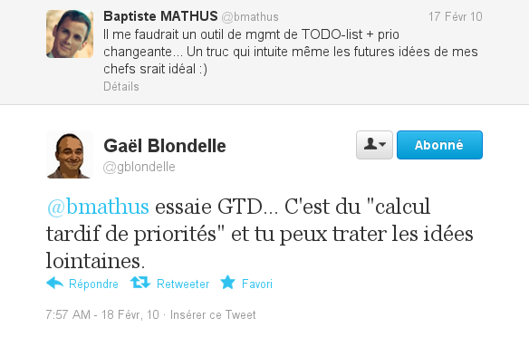
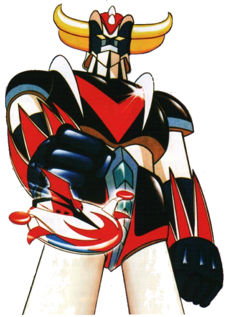

Ou comment
ne pas sombrer
dans la dépression
devant ce flux continu
de trucs à faire
qui arrivent de partout
Disclaimer
- GTD® est un terme déposé ;
- GTD est plus complet que ce qui suit ;
- Le titre de la traduction française du livre est en mousse
Encore un nouveau sujet ?
Deux approches radicalement opposées
Eviter ça ?
Il y a bien longtemps, dans une galaxie lointaine, très lointaine...

Non
Gestion des actions !
Les objectifs de GTD
- Lutter contre le stress
- Augmenter la productivité
Les points clés
- Stockage externe : décharger son cerveau pour déstresser"
- Pas de priorisation
- Prise en compte du contexte, de l'énergie...
- Est-ce actionnable ?
Vocabulaire
- Next Action : action très concrète et unitaire
Exemple : se défendre des méchants de Vega- Exemple : appeler Actarus pour lui demander de me prêter Goldorak
- Projet : sujet nécessitant plusieurs actions
Mes outils
- Gestion des sujets : Toodledo (ajout par mail, API de synchronisation)
- Actuellement, contient environ 190 "tâches"
- Depuis Android : DGT GTD
- Dans Outlook : Jello Dashboard